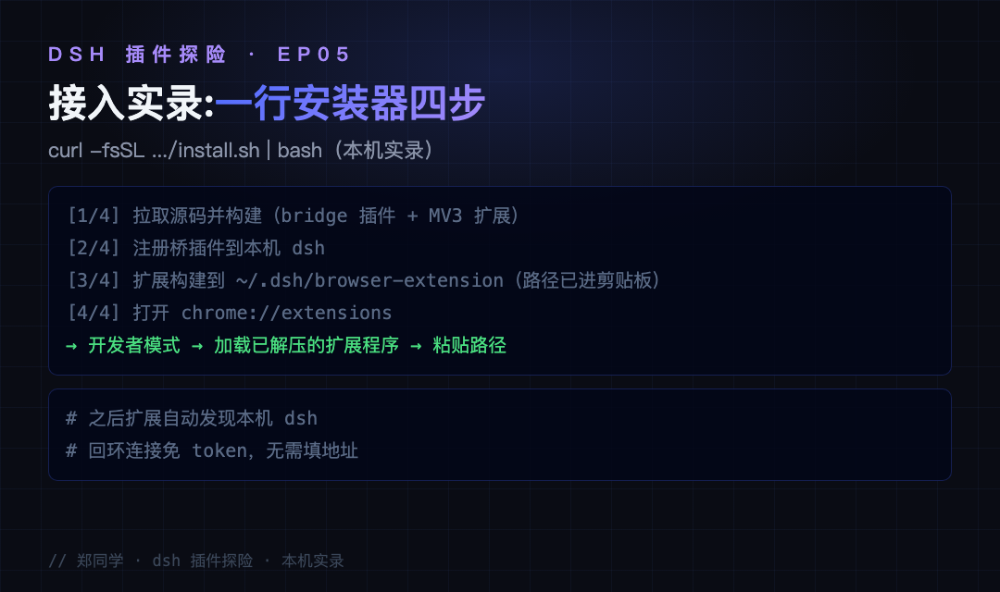
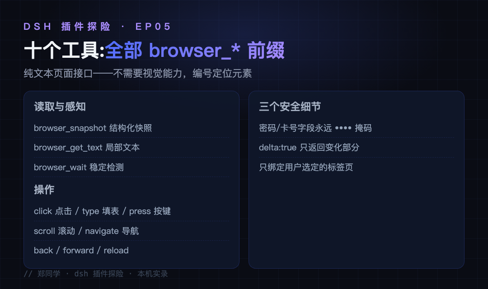
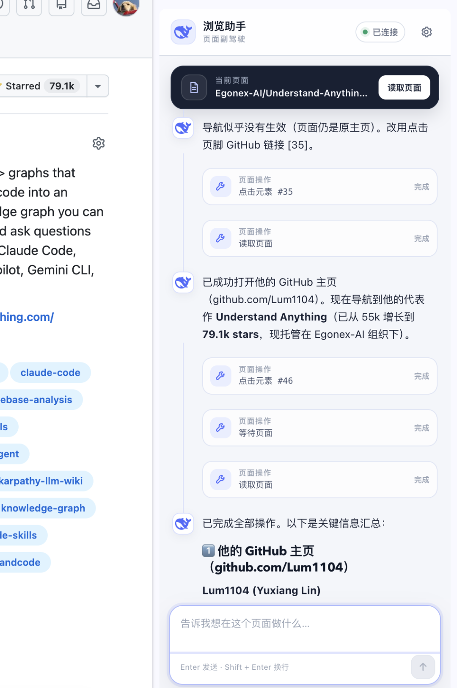
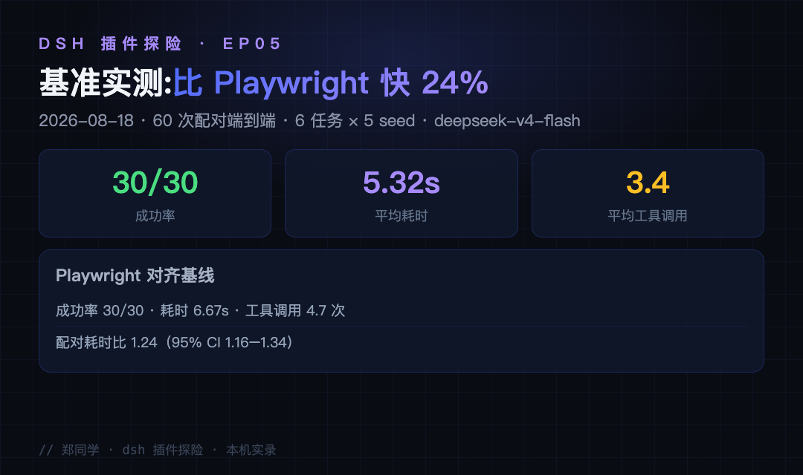
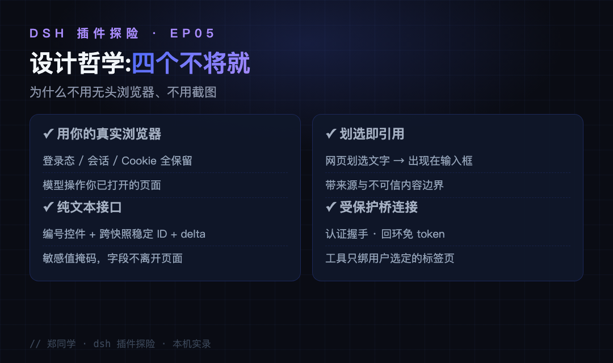

让 agent 帮你操作网页，你大概率卡在这三关：
场景一：要登录态的活，它干不了。 让它在公司系统里提个单、查个数据——无头浏览器没有你的登录态和 Cookie，内部系统还有 SSO；最后还是你自己切页面手动操作。你想要的其实是：它直接在你开着的浏览器里干活，登录态全保留。
场景二：登录才能看的内容，读不了。 内部 wiki、工单详情，你得自己复制粘贴喂给它。你想要的其实是：它直接读当前页面——正文、表单、按钮清单一次拿全。
场景三：划选一段看不懂的内容，描述不清在哪。 "就是那个页面中间那个按钮下面那行字"——传话成本比问题本身还高。你想要的其实是：网页里划选那段文字，直接问"这是啥"。
这三个场景，dsh-browser（作者 Lum1104，star 531）一起解决：一个 Chrome/Firefox 侧边栏扩展 + 一个 dsh 桥插件，把 harness 连到你正在用的真实标签页。模型可以读取页面、点控件、填表单、滚动导航——纯文本接口，不需要视觉能力。还是系列固定四段：接入、使用、截图切图看功能、源码简单分析大概实现。
● ● ●
先说清楚形态：它是桥插件 + 浏览器扩展的组合——桥插件挂在 dsh 侧，扩展装在你的 Chrome/Firefox 里，两边握手配对。所以不能用标准的 dsh plugin add 一条命令装完，官方给了一行安装器：
$ curl -fsSL https://raw.githubusercontent.com/Lum1104/dsh-browser/refs/heads/main/scripts/install.sh | bash
[1/4] 拉取源码并构建（bridge 插件 + MV3 扩展）
[2/4] 注册桥插件到本机 dsh
[3/4] 扩展构建到 ~/.dsh/browser-extension（路径已复制到剪贴板）
[4/4] 打开 chrome://extensions
→ 开发者模式 → 加载已解压的扩展程序 → 粘贴路径
前四步全自动，只有最后一步手动：在 chrome://extensions 里把构建好的扩展加载进来，一次性动作。加载后扩展自动发现本机 dsh——回环连接免 token，不需要填任何地址。前置：Node.js 22.19+/24、Chrome 116+ 或 Firefox 140+。

图：一行安装器四步实录——从构建到 chrome://extensions 加载指引（本机实录）
和截图驱动的浏览器自动化对比一下定位：截图方案需要模型有视觉能力、每次截图都消耗大量上下文；这套纯文本方案让纯文本模型也能精准操作浏览器，你的 Flash 档模型一样能干细活。
一个防坑提醒：npm 上未加 scope 的 dsh-browser 包是另一个项目，和这个仓库无关；本项目没有发布 npm 包，认准仓库安装器。
● ● ●
装好后点浏览器工具栏的 DeepSeek 鲸鱼图标，侧栏就是对话界面。模型拿到 11 个 browser_* 工具：

图：11 个 browser_* 工具与三个安全细节
页面在模型眼里不是截图，而是结构化文本：标题、URL、正文、带编号的交互元素清单、表单字段——模型靠编号定位元素，这就是"无需视觉能力"的实现基础。这套接口最怕的是"编号漂移"：页面一刷新，按钮从 35 号变 34 号，模型照旧点就点错了。它的解法是跨快照稳定 ID——元素标识跨快照保持不变，配合 delta: true 只返回变化部分，重复读取不重复花钱也不重复占上下文。三个安全细节值得单独说：密码和支付卡字段永远显示为 ••••，字段值不会离开页面；delta: true 让重复读取只返回变化部分，省上下文；扩展把工具绑定到你选定的标签页，不是全浏览器监听。
一整轮任务的工具序列长这样（官方截图里的真实案例）：
你：「分析一下这个 GitHub 主页」
模型：browser_navigate → 打开目标页面
browser_snapshot → 编号元素清单
browser_click #35 → 点开代表作
browser_get_text → 拉取局部内容
汇总输出
每一步都是编号定位、纯文本往返，没有一次截图。
划选引用是体验最好的设计：在网页里划选一段文字，它会出现在侧栏输入框里，随下一条消息一起发送，并带上来源与不可信内容边界——"解释这个"三个字就够，不用再描述"在哪个页面哪一块"。捕获时机也有讲究：只有侧栏打开时才捕获划选，且在你发送消息之前内容不会离开浏览器。
图片是另一条通道：dsh 0.1.1 的多模态对话走独立消息，宿主声明图片能力时侧栏可以发 PNG、JPEG、WebP 和 GIF——但浏览器工具本身永远不截取页面截图。工具管操作、用户管看图，边界分得很干净。
● ● ●

图：浏览器助手实拍——侧栏对话驱动 agent 操作 GitHub 页面（官方仓库截图切图）
上图是官方仓库的实拍：侧栏"已连接"，模型连续执行点击元素、读取页面、导航，最后汇总产出——注意全程操作的是用户已登录的真实 GitHub 页面。

图：基准实测——60 次配对端到端，成功率、耗时、工具调用数
性能有严肃数据：2026 年 8 月 18 日的 60 次配对端到端评测（6 个浏览器任务 × 5 个确定性 seed，相同的 dsh profile 与模型），dsh-browser 30/30 全部成功，平均耗时 5.32 秒、平均 3.4 次浏览器工具调用；对齐工具契约的 Playwright 基线同样 30/30，但要 6.67 秒、4.7 次调用——配对耗时比 1.24，延迟低约 24%。评测方法与复现说明在仓库 benchmark/ 目录。
● ● ●
pnpm workspace 三个部分，边界干净——桥插件、扩展、基准合计 120 个源文件约 2 万行。
桥插件（packages/browser/bridge-browser/）：注册进 dsh 的 cordis 插件，把 11 个 browser_* 工具挂到共享工具注册表，管理与扩展的桥连接——认证握手、特权网关方法拒绝非回环调用方。
MV3 扩展（extensions/dsh-browser/）：content script 把页面转成结构化文本和编号交互清单（这是"无需视觉"的核心——模型读到的是带稳定 ID 的文本清单，跨快照不漂移）；background 管标签页绑定与桥通信；侧栏面板承载对话与划选引用。
基准（benchmark/）：60 次配对评测的完整复现材料——6 个浏览器任务、5 个确定性 seed、相同的 dsh profile 与模型，独立页面状态验证结论，方法与数据全部公开可复跑。双平台安装器（install.sh 覆盖 macOS/Linux、install.ps1 覆盖 Windows）也在仓库里，连"BOM 头导致 PowerShell 无法处理中文"这种级别的坑都在注释里解释了。
设计哲学 README 里写得很直白，四条：用你的真实浏览器而不是无头副本（登录态、会话、Cookie 全保留）；纯文本页面接口（编号控件、delta 更新、敏感值掩码）；用"指"代替"描述"（划选即引用，发送前不离开浏览器）；收窄隐私边界（密码和支付卡字段永远掩码）。每一条都对准了"agent 操作浏览器"这个赛道最容易翻车的地方。

图：设计哲学四条——真实浏览器、纯文本接口、划选引用、受保护桥连接
● ● ●
放到五期连读里看，这一期的位置也清楚：dsh-context 加观察窗、routing-suite 换挡位、agent-teams 组队伍、better-sidebar 搭工作台，dsh-browser 则是把 agent 的手伸进了你的浏览器——前面四期的能力都发生在 dsh 自己的世界里，这一次它摸到了你真实的互联网。下一篇继续探险——dsh-web 全家桶逐插件拆解还在候选清单上，或者你来点名。
源码地址：